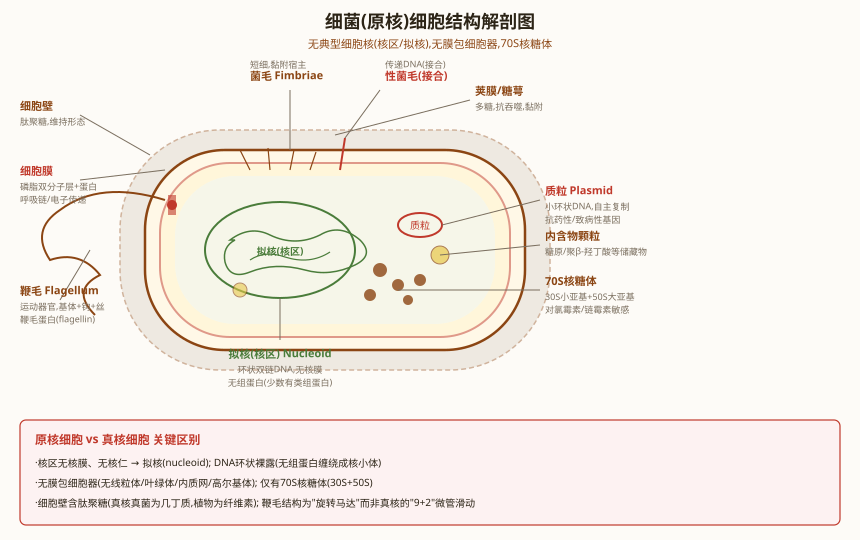

第二节 原核生物（一）—— 细菌（Bacteria）
一、细菌的形态、大小与基本结构
细菌（Bacteria）是原核微生物中最重要、数量最多的类群。细菌的基本形态有球状、杆状、螺旋状三种。球菌按排列方式分：单球菌、双球菌（如脑膜炎奈瑟菌）、链球菌（如化脓链球菌）、四联球菌、八叠球菌、葡萄球菌（如金黄色葡萄球菌）。杆菌（bacillus）两端可呈钝圆、平截或尖细。螺旋菌分为弧菌（vibrio，仅一个弯曲，如霍乱弧菌）和螺菌（spirillum，多个螺旋）。
细菌大小：通常以微米（μm）计。球菌直径约0.5-2.0 μm，杆菌长约1-5 μm，宽约0.5-1.0 μm。少数细菌肉眼可见，如纳米比亚硫磺珍珠菌（Thiomargarita namibiensis）直径可达0.75 mm。
细菌的基本结构包括：细胞壁、细胞膜、细胞质、拟核（nucleoid）、核糖体（70S）。部分细菌还有特殊结构：荚膜、鞭毛、菌毛（pili/fimbriae）、性菌毛（sex pilus）、芽孢（endospore）。

二、细胞壁——革兰氏染色与G⁺/G⁻对比
革兰氏染色（Gram stain, 1884）是细菌学最基础的鉴别染色法，由丹麦医生Hans Christian Gram发明。该染色将细菌分为革兰氏阳性菌（G⁺）和革兰氏阴性菌（G⁻）两大类。染色原理在于二者细胞壁结构的根本差异。
染色步骤（四步法）：
- 初染：结晶紫（crystal violet）染色1 min → 所有细菌呈紫色
- 媒染：碘液（Lugol's iodine）处理1 min → 形成结晶紫-碘复合物（CV-I complex）
- 脱色：95%乙醇或丙酮脱色15-30 s → G⁺保留紫色（肽聚糖层厚，脱水后孔径缩小阻止CV-I流出），G⁻变为无色（肽聚糖层薄+外膜被乙醇破坏）
- 复染：番红（safranin）或碱性复红复染1 min → G⁻呈红色/粉红色，G⁺仍为紫色
（一）G⁺细胞壁结构
G⁺细胞壁由肽聚糖（peptidoglycan）和磷壁酸（teichoic acid）组成，无外膜。肽聚糖层厚达15-80 nm，可多达40层。结构特点：
- 肽聚糖：由N-乙酰葡糖胺（NAG）和N-乙酰胞壁酸（NAM）交替通过β-1,4-糖苷键连接形成多糖骨架。每个NAM上连接一个四肽侧链（L-Ala—D-Glu—L-Lys—D-Ala）。相邻多糖链的四肽侧链通过五甘氨酸肽桥（pentaglycine cross-bridge）交联，形成三维网状结构。交联度高（可达75%以上），使细胞壁坚固。
- 磷壁酸（teichoic acid）：G⁺特有，分为壁磷壁酸（共价连接于肽聚糖NAM）和膜磷壁酸/脂磷壁酸（LTA，锚定于细胞膜）。功能：维持细胞壁结构、调节自溶素活性、提供表面负电荷、参与致病（LTA是重要毒力因子）、噬菌体受体。
- 周质空间（periplasmic space）：G⁺的周质空间较窄，位于细胞膜与肽聚糖层之间，含有少量蛋白质（水解酶类）。
（二）G⁻细胞壁结构
G⁻细胞壁结构更复杂，由外膜（outer membrane）+ 薄肽聚糖层（2-7 nm）+ 细胞膜组成。肽聚糖层仅1-3层，位于周质空间中。核心特征：
- 外膜（outer membrane, OM）：G⁻特有，内外不对称脂双层。内层为磷脂，外层为脂多糖（LPS）。外膜中嵌有孔蛋白（porin），形成三聚体水溶性通道，允许≤600 Da的小分子被动扩散。
- 脂多糖（LPS）：由三部分组成——O-特异侧链（O抗原）：重复寡糖单位，决定血清型，高度可变；核心多糖：较保守，含KDO（2-酮-3-脱氧辛酸）；类脂A（lipid A）：内毒素（endotoxin）活性成分，嵌入外膜外层，含β-羟基豆蔻酸等脂肪酸。类脂A是G⁻菌败血症休克的主要原因。
- 肽聚糖：G⁻的肽聚糖交联方式为直接交联（四肽侧链的DAP的ε-NH₂与相邻链D-Ala的COOH直接形成肽键），无五甘氨酸桥。四肽侧链中第三位为二氨基庚二酸（DAP）而非L-Lys。
- 周质空间（periplasmic space）：G⁻的周质空间较宽，含有肽聚糖层、水解酶类、结合蛋白、趋化性受体、β-内酰胺酶等。
- 布朗脂蛋白（Braun's lipoprotein）：共价连接外膜和肽聚糖，维持外膜稳定性。
| 特征 | 革兰氏阳性菌（G⁺） | 革兰氏阴性菌（G⁻） |
|---|---|---|
| 革兰氏染色 | 紫色 | 红色 |
| 肽聚糖层厚度 | 厚（15-80 nm，可达40层） | 薄（2-7 nm，1-3层） |
| 肽聚糖占细胞壁干重 | 50-80% | 5-10% |
| 外膜 | 无 | 有（含LPS、孔蛋白） |
| 磷壁酸 | 有（壁磷壁酸+脂磷壁酸LTA） | 无 |
| LPS（脂多糖） | 无 | 有（外膜外层） |
| 四肽交联方式 | 五甘氨酸肽桥交联 | 直接交联（DAP-D-Ala） |
| 四肽第三位氨基酸 | L-Lys（赖氨酸） | DAP（二氨基庚二酸） |
| 周质空间 | 窄 | 宽（含肽聚糖+多种酶） |
| 对溶菌酶敏感性 | 敏感→原生质体 | 需EDTA预处理→原生质球 |
| 对青霉素敏感性 | 一般敏感 | 一般耐药（外膜屏障） |
| 内毒素 | 无 | 有（类脂A） |
| 代表菌 | 金黄色葡萄球菌、枯草芽孢杆菌、肺炎链球菌 | 大肠杆菌、沙门氏菌、铜绿假单胞菌 |

三、细菌的特殊结构
（一）荚膜（Capsule）
荚膜（capsule）是某些细菌细胞壁外包裹的一层黏液性物质，边界分明。化学成分多为多糖（如肺炎链球菌荚膜），少数为多肽（如炭疽杆菌D-谷氨酸多肽荚膜）。
- 功能：抗吞噬（最重要毒力因子）、抗干燥、抗噬菌体、储存营养、黏附宿主细胞
- 与致病性：有荚膜菌株致病性强（如肺炎链球菌光滑型S菌落有荚膜、有毒力；粗糙型R菌落无荚膜、无毒力）。Griffith转化实验即利用肺炎链球菌的荚膜有无作为遗传标记。
- 相关概念：黏液层（slime layer，松散附着）、糖萼（glycocalyx，含多糖-蛋白质复合物）
（二）鞭毛与菌毛
鞭毛（flagellum）是细菌的运动器官，由鞭毛蛋白（flagellin）组成，通过基体（basal body）的旋转产生运动。G⁺菌基体有一对环（S环和M环），G⁻菌基体有两对环（L环、P环、S环、M环）。鞭毛着生方式：单端鞭毛（如霍乱弧菌）、两端鞭毛（如空肠弯曲菌）、周生鞭毛（如大肠杆菌、变形杆菌）、丛生鞭毛。
菌毛（pilus/fimbria）：比鞭毛细短，由菌毛蛋白（pilin）组成。普通菌毛（fimbriae）参与黏附（如淋病奈瑟菌黏附泌尿道上皮），性菌毛（sex pilus/F pilus）介导细菌接合——F质粒编码，是F⁺菌与F⁻菌之间DNA转移的通道。
（三）芽孢（Endospore）
芽孢（endospore）是某些G⁺菌（主要是芽孢杆菌属Bacillus和梭菌属Clostridium）在营养匮乏时形成的休眠体。一个营养细胞只产生一个芽孢，一个芽孢萌发只产生一个营养细胞——因此芽孢不是繁殖方式，而是抗逆性休眠结构。
- 芽孢结构（从外到内）：芽孢外壁（exosporium）→芽孢衣（spore coat，含角蛋白样蛋白）→皮层（cortex，含特殊肽聚糖）→核心壁（core wall）→核心（core，含DNA、核糖体、酶等）
- 核心成分：含有大量DPA（吡啶二羧酸，dipicolinic acid）和Ca²⁺，形成DPA-Ca²⁺复合物（占芽孢干重的10-15%），插入DNA碱基对之间稳定DNA，降低DNA对热变性的敏感性。核心含水量极低（仅10-30%），代谢活动基本停止。
- SASP（small acid-soluble spore proteins）：小分子酸溶性芽孢蛋白，结合DNA使其从B型转为A型构象，保护DNA免受UV辐射、热和干燥损伤。SASP也是芽孢萌发后的初始碳源和氮源。
- 抗逆性：芽孢可耐受100°C沸水数小时、121°C高压蒸汽15-20 min（部分可存活）、干燥数十年、UV辐射、化学消毒剂。肉毒杆菌芽孢需121°C高压蒸汽30 min以上才能灭活。
- 形成过程：DNA复制→轴丝形成→隔膜形成→前芽孢形成→皮层合成→芽孢衣合成→成熟→释放。整个过程约需6-8小时，由Spo0A等调控蛋白控制。
- 萌发（germination）：由特定萌发剂（如L-丙氨酸、核苷、糖等）触发，DPA-Ca²⁺释放，皮层水解，核心吸水膨胀，SASP降解，代谢恢复。
四、质粒（Plasmid）——四大家族
质粒（plasmid）是细菌染色体外的共价闭合环状双链DNA（cccDNA），能独立复制，拷贝数1-数百不等。质粒不是细菌生存必需的，但赋予宿主选择性优势。质粒是基因工程中最重要的载体。
质粒四大家族（按功能分类）：
- F质粒（Fertility factor, 致育因子）：约100 kb，编码性菌毛（F pilus），介导细菌接合。含tra基因簇（transfer genes）。F⁺菌（有F质粒）可通过接合将F质粒转移给F⁻菌。Hfr菌株（高频重组株）：F质粒整合入宿主染色体→接合时可将宿主染色体DNA转移给受体→用于基因定位（中断杂交实验）。F'质粒：F质粒从染色体上不精确切除时携带部分宿主染色体基因。
- R质粒（Resistance factor, 耐药质粒）：携带抗生素耐药基因，可通过接合在细菌间水平传播。R质粒常含RTF（耐药转移因子，含tra基因）+ R决定子（耐药基因）。是超级细菌（如MRSA、CRE、NDM-1）耐药性传播的主要机制。常见耐药基因：β-内酰胺酶（bla基因，水解青霉素）、氨基糖苷修饰酶、四环素外排泵等。
- Col质粒（Colicinogenic factor, 大肠杆菌素因子）：编码大肠杆菌素（colicin），可杀死同种或近缘细菌。ColE1质粒（约6.6 kb，拷贝数高）是基因工程中常用的质粒载体骨架（如pBR322、pUC系列）。
- Ti质粒（Tumor-inducing plasmid, 致瘤质粒）：存在于根癌农杆菌（Agrobacterium tumefaciens）中，约200 kb。含T-DNA区（转移DNA）和vir区（毒力基因）。T-DNA可整合入植物基因组，诱导冠瘿瘤（crown gall），并使植物合成冠瘿碱（opine）。Ti质粒是植物基因工程的核心工具——将目的基因克隆到T-DNA区后通过农杆菌介导转化植物。
五、细菌遗传重组
细菌的遗传重组（genetic recombination）是原核生物遗传多样性产生的重要机制，不等同于有性生殖（无减数分裂和配子融合）。主要包括三种方式：转化、接合、转导。
（一）转化（Transformation）
转化是感受态细菌直接摄取环境中的游离DNA并整合到自身基因组的过程。Griffith（1928）的肺炎链球菌转化实验是最经典的转化实验。Avery, MacLeod & McCarty（1944）通过该实验证明了DNA是遗传物质。
- 感受态（competence）：细菌能够摄取外源DNA的生理状态。自然感受态（如肺炎链球菌、枯草芽孢杆菌、流感嗜血杆菌）在特定生长阶段出现，由com基因调控。人工感受态：CaCl₂处理（化学法，使细胞膜通透性增加）+ 热激（42°C）或电穿孔（electroporation）。
- 转化机制：G⁺菌（如肺炎链球菌）：分泌感受态因子（CSP, competence-stimulating peptide）→触发群体感应（quorum sensing）→表达DNA结合蛋白和核酸酶→单链DNA进入细胞→RecA介导同源重组。G⁻菌（如流感嗜血杆菌）：需特异性摄取序列（USS, uptake signal sequence）识别同源DNA。
- 应用：转化是分子克隆的基础技术——将重组质粒导入大肠杆菌感受态细胞。
（二）接合（Conjugation）
接合是通过性菌毛（F pilus）介导的细胞间直接接触进行DNA转移。Lederberg & Tatum（1946）在大肠杆菌K12菌株中首次发现接合，标志着细菌有性过程的发现（获1958年诺贝尔奖）。
- F⁺×F⁻交配：F质粒编码性菌毛，F⁺菌通过性菌毛与F⁻菌接触→F质粒单链DNA通过滚环复制转移→F⁻菌变为F⁺。F质粒一般不在染色体间转移。
- Hfr（高频重组菌株）×F⁻：F质粒整合入宿主染色体→接合时从整合位点开始将宿主染色体DNA顺序转移给F⁻菌→F⁻菌通常只获得部分染色体DNA（因为接合过程常在DNA全部转移前中断）。中断杂交实验（interrupted mating）：通过在不同时间点打断接合，确定基因转移顺序，绘制细菌染色体遗传图谱。这是细菌遗传学最经典的技术之一。
- F'×F⁻：F质粒从染色体不精确切除时携带部分宿主基因→形成F'质粒→接合时将F'质粒转移→受体菌获得部分二倍体（merodiploid），可用于互补测验（complementation test）。
（三）转导（Transduction）
转导是以噬菌体为媒介，将供体菌DNA转移到受体菌的过程。Lederberg & Zinder（1952）在鼠伤寒沙门氏菌中发现。分为两种类型：
- 普遍性转导（generalized transduction）：噬菌体（如P22在沙门氏菌中，P1在大肠杆菌中）在裂解周期中，错误包装——将宿主菌随机DNA片段（而非噬菌体DNA）包装入噬菌体头部。这种转导颗粒（transducing particle）可感染受体菌，将供体菌DNA注入。供体DNA可通过同源重组整合到受体染色体。可转移任何基因（故名"普遍性"），但包装容量有限（P22约44 kb，P1约90 kb）。
- 局限性转导（specialized transduction）：温和噬菌体（如λ）在切除时发生不精确切除，携带宿主染色体整合位点附近的特定基因（如λ携带gal或bio基因）。只能转移特定基因（故名"局限性"）。形成λdgal（缺陷型λ，携带gal基因）或λdbio。λdgal是缺陷型噬菌体，需辅助噬菌体（helper phage）提供缺失的噬菌体基因才能复制。
| 特征 | 转化（Transformation） | 接合（Conjugation） | 普遍性转导 | 局限性转导 |
|---|---|---|---|---|
| DNA转移方式 | 游离DNA直接摄取 | 细胞间直接接触 | 噬菌体介导 | 噬菌体介导 |
| 需要供体活细胞 | 否（可从死菌释放DNA） | 是 | 是（供体菌被裂解） | 是（供体菌被诱导） |
| DNA酶敏感性 | 敏感 | 不敏感 | 不敏感（噬菌体保护） | 不敏感 |
| 转移基因范围 | 任何基因 | 任何基因（Hfr） | 任何基因 | 仅整合位点附近基因 |
| 关键条件 | 感受态 | F质粒/性菌毛 | 噬菌体错误包装 | 噬菌体不精确切除 |
| 代表 | 肺炎链球菌 | 大肠杆菌K12 | P22（沙门氏菌） | λ（大肠杆菌） |
| 发现者 | Griffith (1928) | Lederberg & Tatum (1946) | Lederberg & Zinder (1952) | — |
六、抗生素作用机制
| 作用靶点 | 抗生素 | 作用机制详解 | 抗菌谱 |
|---|---|---|---|
| 细胞壁合成 | 青霉素（Penicillin） | β-内酰胺环与PBPs共价结合，抑制转肽酶，阻断肽聚糖交联 | 主要G⁺ |
| 头孢菌素（Cephalosporin） | 同青霉素机制，PBPs亲和力谱不同 | G⁺/G⁻（各代不同） | |
| 万古霉素（Vancomycin） | 结合D-Ala-D-Ala末端，空间位阻阻断转肽和转糖基反应 | 仅G⁺（不能穿透G⁻外膜） | |
| 环丝氨酸（Cycloserine） | D-Ala类似物，抑制D-Ala-D-Ala二肽合成（L-Ala消旋酶和D-Ala-D-Ala连接酶） | G⁺/G⁻ | |
| 杆菌肽（Bacitracin） | 抑制bactoprenol焦磷酸去磷酸化，阻断肽聚糖前体跨膜转运 | 主要G⁺ | |
| 细胞膜 | 多粘菌素（Polymyxin） | 与LPS和磷脂结合，破坏外膜和细胞膜完整性（类似去污剂） | G⁻ |
| 达托霉素（Daptomycin） | Ca²⁺依赖插入G⁺细胞膜，形成离子通道导致膜电位崩溃 | 仅G⁺ | |
| 蛋白质合成 | 四环素（Tetracycline） | 结合30S亚基A位点，阻止氨酰-tRNA进入 | 广谱 |
| 链霉素（Streptomycin） | 结合30S亚基，引起mRNA误读，产生异常蛋白质 | G⁺/G⁻（结核分枝杆菌） | |
| 氯霉素（Chloramphenicol） | 结合50S亚基，抑制肽基转移酶活性，阻断肽键形成 | 广谱 | |
| 红霉素（Erythromycin） | 结合50S亚基，阻断肽链出口通道，抑制蛋白质延伸 | 主要G⁺ | |
| 利奈唑胺（Linezolid） | 结合50S亚基，阻止70S起始复合物形成 | G⁺（MRSA/VRE） | |
| 核酸合成 | 利福平（Rifampicin） | 非竞争性结合RNA聚合酶β亚基，抑制转录起始 | G⁺/G⁻（结核分枝杆菌） |
| 喹诺酮类（Ciprofloxacin） | 抑制DNA旋转酶（gyrase）和拓扑异构酶IV，阻断DNA复制 | 广谱 | |
| 代谢途径 | 磺胺类（Sulfonamide） | PABA结构类似物，竞争性抑制二氢叶酸合成酶（DHPS） | 广谱 |
| 甲氧苄啶（Trimethoprim） | 抑制二氢叶酸还原酶（DHFR），阻断四氢叶酸合成 | 广谱 |
选择性毒性原理：抗生素之所以能杀死细菌而不伤害人体细胞，是因为靶向细菌特有的结构或代谢途径：
- 细胞壁合成：人体细胞无细胞壁，肽聚糖是细菌特有——青霉素只影响细菌
- 70S核糖体：细菌核糖体为70S（50S+30S），人体细胞质核糖体为80S（60S+40S）——四环素、链霉素、红霉素等选择性作用于70S核糖体。但线粒体核糖体也是70S，某些抗生素（如氯霉素）可能抑制线粒体蛋白质合成而产生毒性
- 叶酸代谢：细菌必须自身合成叶酸，人体从食物中获取——磺胺类药物选择性抑制细菌叶酸合成
- DNA旋转酶：细菌DNA旋转酶（gyrase）与真核生物拓扑异构酶II结构差异足够大——喹诺酮类药物选择性抑制细菌gyrase
七、细菌营养类型与呼吸类型
| 分类依据 | 类型 | 碳源 | 能源 | 电子供体 | 代表 |
|---|---|---|---|---|---|
| 营养类型 | 光能自养 | CO₂ | 光 | H₂O/H₂S | 蓝细菌、绿硫细菌 |
| 光能异养 | 有机物 | 光 | 有机物 | 紫色非硫细菌 | |
| 化能自养 | CO₂ | 无机物氧化 | NH₃/NO₂⁻/H₂S/Fe²⁺ | 硝化细菌、硫细菌 | |
| 化能异养 | 有机物 | 有机物氧化 | 有机物 | 绝大多数细菌 | |
| 呼吸类型 | 专性需氧 | 以O₂为最终电子受体，有完整呼吸链。有SOD和过氧化氢酶 | 结核分枝杆菌、铜绿假单胞菌 | ||
| 兼性厌氧 | 有O₂时进行有氧呼吸，无O₂时进行发酵或无氧呼吸。有SOD和过氧化氢酶 | 大肠杆菌、金黄色葡萄球菌 | |||
| 微需氧 | 需少量O₂（2-10%），高浓度O₂有毒。有少量SOD | 空肠弯曲菌、幽门螺杆菌 | |||
| 耐氧厌氧 | 不利用O₂，但可耐受O₂。有SOD但无过氧化氢酶 | 乳酸链球菌 | |||
| 专性厌氧 | O₂有毒，无SOD和过氧化氢酶。以发酵或无氧呼吸产能 | 肉毒杆菌、破伤风梭菌、产甲烷古菌 | |||
氧毒性机制：O₂的还原中间产物（活性氧ROS）对细胞有毒害——超氧阴离子O₂⁻（由SOD转化为H₂O₂）、过氧化氢H₂O₂（由过氧化氢酶/过氧化物酶分解）、羟自由基OH·（最活泼、破坏性最强）。厌氧菌缺乏SOD和/或过氧化氢酶，无法清除ROS，因此O₂有毒。兼性厌氧菌在有氧和无氧条件下切换代谢途径，有氧呼吸ATP产量远高于发酵（大肠杆菌有氧呼吸约38 ATP/葡萄糖，无氧发酵约2 ATP/葡萄糖）。
第二节 原核生物（一）—— 细菌 必背考点总结
- 革兰氏染色：四步法（初染→媒染→脱色→复染）。G⁺紫色（厚肽聚糖截留CV-I），G⁻红色（薄肽聚糖+外膜被破坏）。原理是肽聚糖厚度差异。
- G⁺/G⁻细胞壁对比：G⁺厚肽聚糖（15-80nm）+磷壁酸+五甘氨酸肽桥交联+L-Lys，无外膜。G⁻薄肽聚糖（2-7nm）+外膜（LPS、孔蛋白）+直接交联（DAP）+无磷壁酸。LPS=O抗原+核心多糖+类脂A（内毒素）。
- 芽孢：G⁺菌（芽孢杆菌属/梭菌属）的休眠体，非繁殖方式。DPA-Ca²⁺复合物+SASP保护DNA。121°C高压蒸汽15-20 min灭活。
- 质粒四大家族：F（致育/接合）、R（耐药/超级细菌传播）、Col（大肠杆菌素/基因工程载体）、Ti（植物致瘤/转基因工具）。
- 细菌遗传重组：转化（Griffith/Avery, 感受态摄取裸DNA）→接合（Lederberg & Tatum, F质粒/性菌毛, Hfr中断杂交）→转导（Lederberg & Zinder, 普遍性P22错误包装 vs 局限性λ不精确切除）。
- 抗生素作用机制：细胞壁合成（青霉素/PBPs, 万古霉素/D-Ala-D-Ala）、蛋白质合成（四环素30S, 红霉素50S）、核酸合成（利福平/RNA聚合酶, 喹诺酮/gyrase）、代谢（磺胺/叶酸）。耐药机制：酶解、靶点修饰、外排泵、通透性降低。
- 营养类型：光能自养/异养、化能自养/异养。呼吸类型：专性需氧、兼性厌氧、微需氧、耐氧厌氧、专性厌氧（取决于SOD和过氧化氢酶）。
高中教材衔接 · 课标对应
人教版高中生物对细菌（原核生物代表）的覆盖：
- 必修1《分子与细胞》第1章"细胞是生命活动的基本单位"：原核细胞与真核细胞的对比——细菌属于原核生物，无以核膜为界限的真正细胞核（拟核），无线粒体、叶绿体、内质网、高尔基体等复杂细胞器，只有核糖体一种细胞器。代表生物：细菌（细菌界）、蓝藻（蓝细菌）、放线菌、支原体、衣原体等。
- 必修1第2章"组成细胞的分子"：细菌的细胞壁成分与植物/真菌/动物细胞壁的区别——细菌细胞壁主要成分是肽聚糖（peptidoglycan）（革兰氏阳性菌厚、革兰氏阴性菌薄）。革兰氏染色法是经典实验。
- 必修1第3章"细胞膜的结构和功能"：革兰氏阴性菌的外膜（outer membrane）含脂多糖（LPS）——LPS 又称内毒素，是败血症的关键致病因子；脂多糖由 O 抗原 + 核心多糖 + 类脂 A 三部分组成，类脂 A 是毒性中心。
- 必修1第5章"细胞的能量供应"：细菌的营养类型——光能自养（紫硫细菌）、光能异养（紫色非硫细菌）、化能自养（硝化细菌、硫细菌、铁细菌）、化能异养（绝大多数病原菌）。细菌呼吸类型：专性需氧、专性厌氧、兼性厌氧、微需氧。
- 必修1第6章"细胞的生命历程"：细菌的二分裂生殖（binary fission）——无有丝分裂器，由 FtsZ 蛋白环（与真核微管蛋白同源）介导隔膜形成，DNA 复制起点 oriC 复制后均分到两个子细胞。
- 必修2《遗传与进化》第3章：肺炎双球菌转化实验（Griffith 1928 → Avery 1944 证明 DNA 是转化因子）是高中课标的"明星考点"——以细菌为模式生物首次证明 DNA 是遗传物质。
- 选修/课后扩展：结核分枝杆菌（结核病）、幽门螺杆菌（胃溃疡）、大肠杆菌（肠道共生/食品污染）、金黄色葡萄球菌（食物中毒）——是 STSE（科学-技术-社会-环境）教育的素材。
课标 vs 竞赛的差距：
- 课标要求"知道原核生物的特征"和"革兰氏染色法"，竞赛要求：①细菌细微结构（核糖体 70S、拟核、质粒 F/R/Col/Ti、荚膜、菌毛、鞭毛的结构与功能）；②革兰氏阳/阴性菌细胞壁的化学组成差异（肽聚糖层厚度、磷壁酸、LPS、脂蛋白）；③细菌遗传重组三机制——转化（感受态 Com 系统）、转导（普遍性/局限性）、接合（F 质粒/Hfr 中断杂交/性菌毛）；④质粒四大家族（F/R/Col/Ti）；⑤芽孢（endospore）的抗逆机制（DPA-Ca2+ 复合物、SASP）；⑥抗生素六大类靶点（细胞壁合成、蛋白质合成、核酸合成、叶酸代谢、细胞膜、DNA 旋转酶）和耐药机制（酶解、靶点修饰、外排泵、膜通透性降低）；⑦细菌群体感应（quorum sensing，AI-2 信号分子）。
- 课标不涉及的：F 质粒的接合基因（tra operon）、Hfr 与 F+ 的差异、中断杂交作图（时间与基因转移距离成正比）、感受态的"摄食 DNA"机制（ComA/ComEA/ComEC）、转导的溶原期误切（普遍性 P22）vs 位点专一性（局限性 λ）、Tn5/Tn10 转座子、整合子（integron）和超级细菌（NDM-1 金属 β-内酰胺酶）。
2025 / 2026 联赛 · 初赛真题链接
本章重难点深度解析
重难点 1：革兰氏阳性 vs 阴性菌的细胞壁结构差异
革兰氏染色（Gram stain, 1884 年 Hans Christian Gram 发明）是细菌分类的最经典方法。差异本质是肽聚糖层厚度和细胞外膜的有无：
- G+菌（Gram positive）：厚肽聚糖层（15-80 nm，可达 40 层），由 N-乙酰葡糖胺（GlcNAc, G）和 N-乙酰胞壁酸（MurNAc, M）通过 β-1,4 糖苷键交替形成骨架，短肽链（L-Ala-D-Glu-mDAP 或 L-Lys-D-Ala-D-Ala）交联。G+ 还含磷壁酸（teichoic acid）（甘油或核糖醇磷酸聚合物）和壁磷壁酸（lipoteichoic acid, LTA）（共价连接胞膜）。代表：金黄色葡萄球菌、链球菌、肺炎双球菌、枯草芽孢杆菌、结核分枝杆菌（特殊：分枝菌酸 mycolic acid）。
- G-菌（Gram negative）：薄肽聚糖层（2-7 nm，仅 1-3 层），位于内膜（细胞质膜）和外膜之间的周质空间（periplasm）。外膜（outer membrane）是不对称双层——内叶为磷脂，外叶为脂多糖（LPS）。LPS 由三部分组成：①类脂 A（lipid A）——内毒素的毒性中心（激活 TLR4/MD2/CD14 → NF-κB → 炎症因子风暴）；②核心多糖（KDO、庚糖）；③O 抗原（重复寡糖单位，决定 O 血清型）。代表：大肠杆菌、沙门氏菌、铜绿假单胞菌、淋病奈瑟氏菌、幽门螺杆菌。
- 结构决定功能与药物靶点：①G+ 厚肽聚糖 → 青霉素（PBPs 抑制转肽酶 cross-linking）、万古霉素（结合 D-Ala-D-Ala 末端）效果好；②G- 外膜屏障 → 脂溶性药物（如利福平）较易透过；亲水药物需经孔蛋白（porin, OmpF/OmpC）进入；③G- 薄肽聚糖 → β-内酰胺类在周质空间即可接触；④G- LPS 释放 → 脓毒症、内毒素休克（DIC、多器官衰竭）。
重难点 2：细菌遗传重组三大机制——转化、转导、接合
细菌虽然主要为无性繁殖（克隆），但可通过三种机制进行基因水平转移，是细菌进化、抗药性传播、基因工程的基础：
- 转化（transformation）：受体菌直接摄取环境中的游离 DNA。自然转化仅在"感受态"细胞发生（如肺炎双球菌、流感嗜血杆菌、枯草芽孢杆菌）。Com 系统：ComA（感受态刺激因子 CSF 输出）→ ComEA/ComEC（DNA 受体/通道）→ DprA（DNA 摄取后结合 ssDNA）→ Ssb（保护 ssDNA）→ RecA 介导同源重组。Griffith 1928 首次发现（肺炎双球菌 R 型 + 死 S 型 → 活 S 型小鼠致死），Avery 1944 鉴定 DNA 是转化因子。人工转化：CaCl2 处理 + 42°C 热激（瞬时膜通透性增加），是基因工程的基础。
- 转导（transduction）：以噬菌体为媒介在细菌间传递 DNA。①普遍性转导（generalized）：裂解期噬菌体偶尔错误包装宿主 DNA（如 P22 误包 Salmonella 染色体片段）→ 注入新宿主 → 同源重组。Lederberg & Zinder 1952 在鼠伤寒沙门氏菌中发现。②局限性转导（specialized）：温和噬菌体（λ）从溶原态切离时偶尔误切相邻宿主基因（如 gal 或 bio）→ 转入新宿主 → 形成部分二倍体（heterogenote）。λ 噬菌体整合在 attB/attP 位点（在大肠杆菌 E. coli 中位于 gal 和 bio 之间），所以经常带动 gal/bio。
- 接合（conjugation）：通过性菌毛（sex pilus, F pilus）建立细胞间连接，转移 F 质粒或 Hfr 染色体。F 质粒（致育因子，~100 kb, 94.5 kb）含 tra 操纵子（编码菌毛合成、接合配对形成、DNA 转移）。①F+ × F-：F 质粒从供体向受体转移（单链滚动循环 transfer），受体变 F+。②Hfr × F-：F 质粒整合到染色体后形成 Hfr（高频重组），接合时从 oriT 开始，按顺序向受体转移染色体 DNA（F 质粒最后转移，常未转移完就接合中断）。中断杂交作图（interrupted mating）：Hayes & Wollman 1952，以接合时间（min）为横坐标绘制基因转移顺序 → 推算基因在染色体上的位置（E. coli 全基因组 100 min，5 Mb）。③F'：Hfr 中 F 质粒不精确切离时携带部分染色体基因，形成 F'（如 F'lac, F'gal）——可形成局部二倍体（merozygote），用于互补测验。
重难点 3：质粒四大家族与抗生素耐药
- F 质粒（致育因子）：~94.5 kb，~100 个 tra 基因，介导接合。F 因子整合到染色体形成 Hfr，是"跳基因"（episome）的代表。
- R 质粒（耐药质粒）：决定抗生素耐药性，常携带多个耐药基因（多药耐药 MDR）。R 质粒可携带 β-内酰胺酶（penicillinase）、氨基糖苷修饰酶（APH, AAC）、四环素外排泵（TetA）、红霉素酯酶等。超级细菌（如耐碳青霉烯肠杆菌科 CRE，携 NDM-1 金属 β-内酰胺酶基因）可水解"最后一道防线"碳青霉烯类抗生素，是 WHO 列为最高优先级的耐药菌。R 质粒可通过接合在种间传播（如从大肠杆菌到沙门氏菌）——这是抗药性蔓延的核心机制。
- Col 质粒（大肠杆菌素因子）：编码大肠杆菌素（colicin）——细菌毒素，可杀死近缘细菌。ColE1 质粒是基因工程载体的祖先（pBR322 衍生于 ColE1 的复制起点）。
- Ti 质粒（致瘤质粒）：根癌农杆菌 Agrobacterium tumefaciens 中 ~200 kb 大质粒，含有 T-DNA（转移 DNA，~25 kb）和 vir 操纵子（毒性基因，介导 T-DNA 转移并整合到植物基因组）。T-DNA 引起冠瘿瘤（crown gall），并强制植物合成冠瘿碱（opine）作为农杆菌营养。Ti 质粒是植物基因工程的核心载体——去掉 T-DNA 中的致瘤基因，插入外源基因，vir 系统介导外源 T-DNA 整合到植物基因组。农杆菌介导法是双子叶植物和裸子植物转基因的标准方法（单子叶植物水稻等常用基因枪法）。
重难点 4：芽孢的抗逆机制与细菌群体感应
- 芽孢（endospore）：G+ 菌的休眠体（芽孢杆菌属 Bacillus、梭菌属 Clostridium），是抗逆性最强的生命形式之一。结构：核心（core）含染色体 DNA + DPA-Ca2+ 复合物（吡啶二羧酸钙，稳定 DNA 抗高温）；内膜；皮层（cortex, 肽聚糖但交联度低）；外壳（coat, 蛋白质层，含 SASP 小酸溶性蛋白，保护 DNA）；外壁（exosporium）。抗逆：耐 100°C 沸水数小时、耐干燥、耐辐射（10-30 kGy）、耐化学消毒剂（乙醇、酚、季铵盐等）。灭菌标准：121°C 高压蒸汽 15-20 min（湿热灭菌）；160°C 干热 2 h；100°C 间歇灭菌（Tyndallization）三天。代表：炭疽芽孢杆菌（Bacillus anthracis）——炭疽病；肉毒梭菌（Clostridium botulinum）——肉毒毒素（1 g 可毒死 100 万人）。
- 群体感应（quorum sensing, QS）：细菌通过分泌和感应自诱导分子（autoinducer, AI）感知种群密度，调节基因表达。费氏弧菌（Vibrio fischeri）的生物发光是经典模型：LuxI 合成 AI（酰基高丝氨酸内酯 AHL）→ 浓度随菌密度增加 → 达到阈值时 LuxR 激活 luxICDABE 操纵子转录 → 产生荧光素酶 → 产生生物发光。革兰氏阳性菌用寡肽类 AI（如金黄色葡萄球菌的 AIP）；革兰氏阴性菌主要用 AHL。QS 调控：生物发光、生物膜形成、毒力因子分泌、孢子形成、接合转移。QS 抑制剂（quorum quenching）是新型抗菌策略——不杀死细菌，仅破坏 QS → 减弱毒力 → 避免耐药。
- 生物膜（biofilm）：细菌附着在固体表面分泌胞外多糖（EPS, 胞外聚合物）、蛋白质、eDNA 形成的复杂群落结构。生物膜对抗生素的抗性比浮游菌高 100-1000 倍——胞外基质阻止药物渗入、内部代谢减缓、persister 细胞（持留菌）存活。生物膜引起慢性感染（如囊性纤维化患者肺中的铜绿假单胞菌生物膜）、牙菌斑、心内膜炎、生物污垢。生物膜形成与 QS 密切相关。